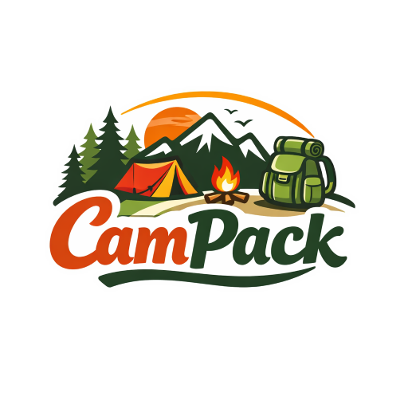
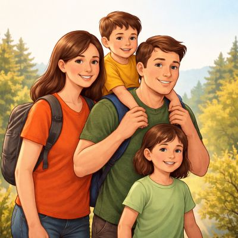
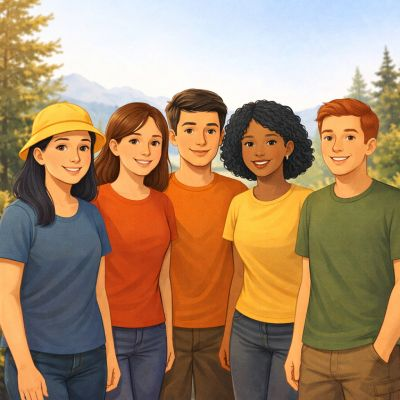
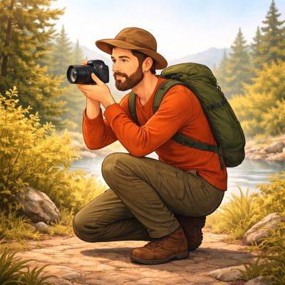
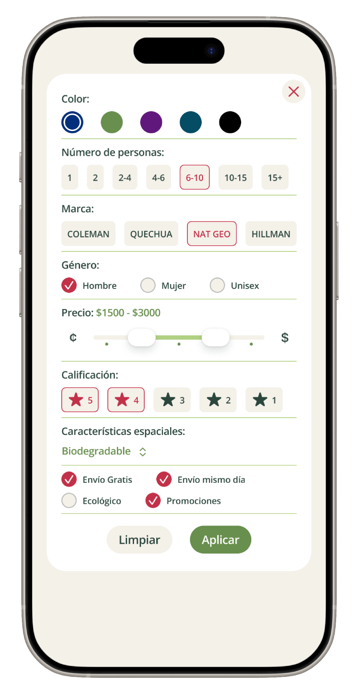
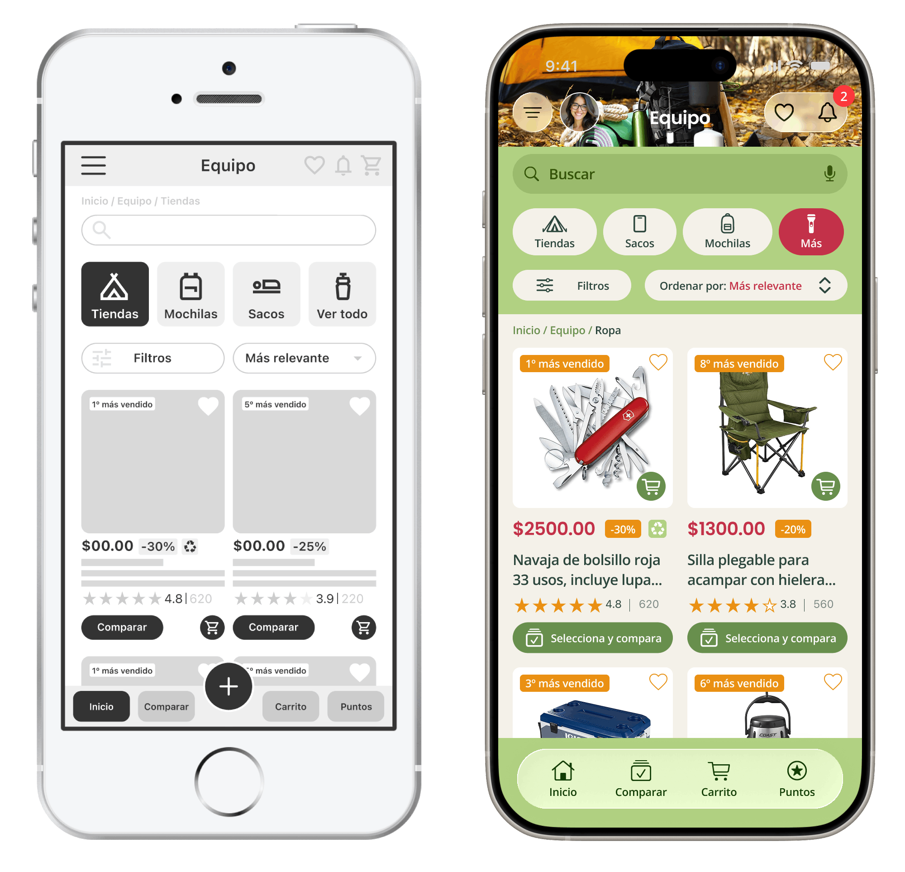
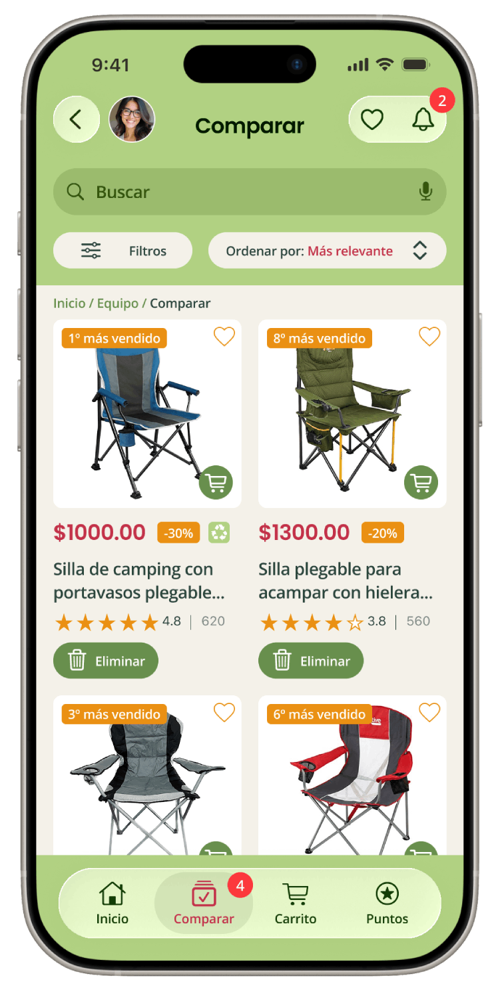
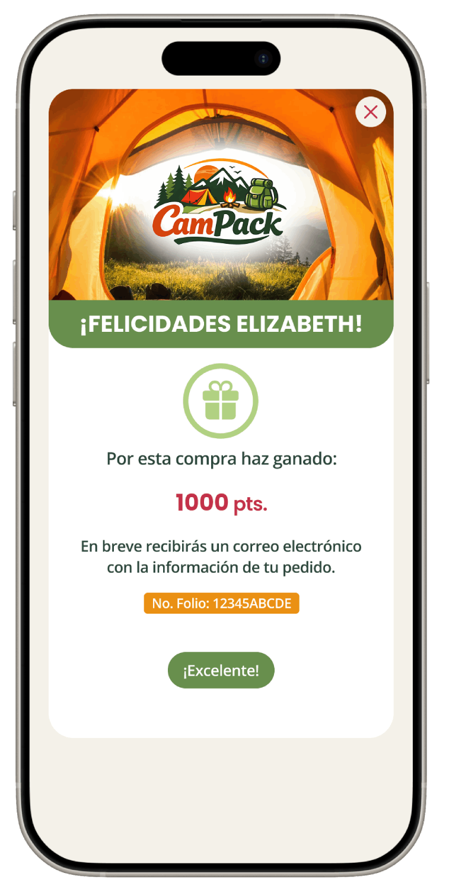

Ver cómo se resolvióLos usuarios tienen dificultades para identificar y seleccionar productos de camping adecuados a su contexto, lo que genera confusión, abandono de compra y baja confianza en la decisión.
Diseñar una experiencia de búsqueda y selección que reduzca la complejidad, facilite la comparación y ayude a los usuarios a tomar decisiones informadas.
Las necesidades cambian según el tipo de usuario, por lo que un catálogo genérico no responde a la forma en que las personas realmente toman decisiones de compra.
Se identificaron 4 perfiles clave: familias, parejas, grupos y usuarios individuales, cada uno con necesidades distintas en seguridad, portabilidad y uso.



Se diseñó un sistema de filtros adaptado por tipo de usuario para reducir la complejidad en la búsqueda y facilitar la selección de productos relevantes.

Segmentar la experiencia por tipo de usuario en lugar de mantener un catálogo genérico.
Wireframe → Interfaz final
Evolución del wireframe a la interfaz final.
Flujo principal: búsqueda → filtrado → comparación → compra
Se estructuró un flujo claro de búsqueda, filtrado, comparación y compra, priorizando el acceso rápido al buscador, la organización por categorías y el uso de etiquetas y reseñas para apoyar la decisión.
Ver prototipo de baja fidelidadLas pruebas revelaron confusión entre acciones de comparar y comprar, dificultad en el uso de filtros y problemas de navegación. Se simplificaron flujos, se ajustaron etiquetas y se mejoró la estructura de la interfaz.

Se rediseñó la navegación, se optimizaron los filtros por tipo de usuario y se priorizó la información clave para reducir la incertidumbre y facilitar la elección.
La interfaz prioriza búsqueda, filtros por tipo de usuario y visibilidad de información clave para facilitar la decisión.
Ver prototipo de alta fidelidadSe diseñó una herramienta de comparación que permite evaluar productos de forma estructurada, facilitando la identificación de diferencias clave y apoyando una decisión más informada.
Facilitando la toma de decisiones

Se integró un sistema de recompensas al finalizar la compra, otorgando puntos que incentivan la recompra y refuerzan la experiencia del usuario.
Este enfoque retoma principios de programas de lealtad aplicados al eCommerce.

El sistema de puntos refuerza la satisfacción post-compra y fomenta la lealtad.
La solución transforma un catálogo genérico en una experiencia guiada, donde los usuarios pueden filtrar, comparar y evaluar productos de forma estructurada.
Esto reduce la fricción en la toma de decisiones, mejora la claridad en la selección y fortalece la confianza del usuario durante la compra.
Validado mediante pruebas de usabilidad con usuarios.
Diseñar con base en el contexto real del usuario permite tomar decisiones más precisas. Validar continuamente ayuda a reducir errores y mejorar la claridad de la experiencia.